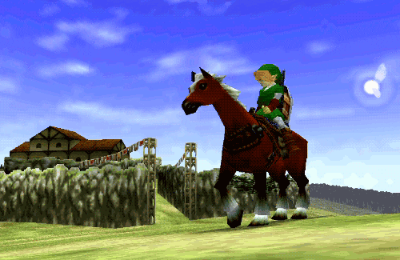
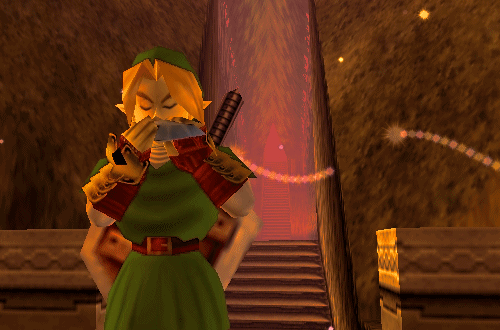
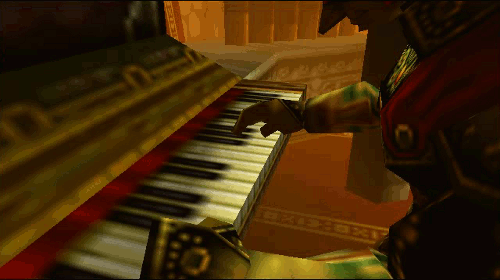

Welcome to Hyrule
Ocarina of Time is universally considered one of the most important and influential games of not only the Zelda franchise but the video game industry as a whole.
Fun Hyrulian Facts

Outside of the Zelda franchise, the game caused an unprecedented impact on the video game industry, to the point that many other games and series were influenced by the gameplay style from the game, especially the 3D action-adventure genre.

The game's main theme on the title screen is an extended version of the melody played by the Recorder item from the original The Legend of Zelda, performed by the titular Ocarina of Time.

This is the final installment of the series where its original composer Koji Kondo created the music by himself.

Ganon's ultimate defeat by Link in this game is often considered one of, if not the most climactic finishes of a Final Boss battle in The Legend of Zelda series as well as video game history.